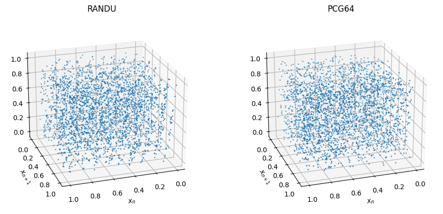
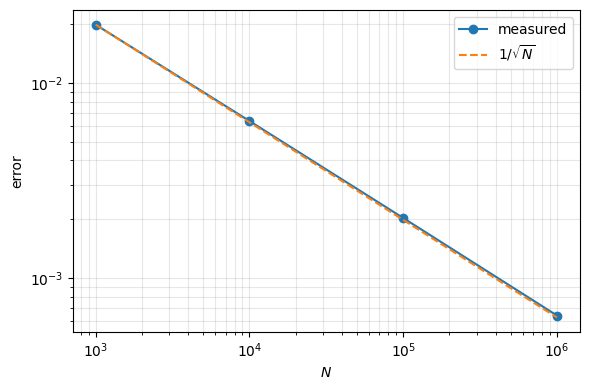
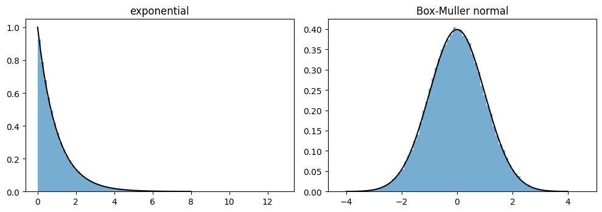
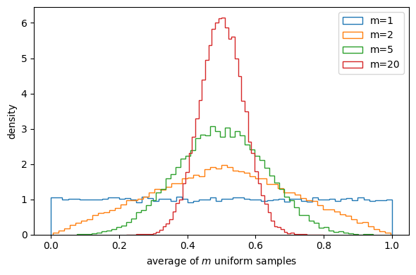
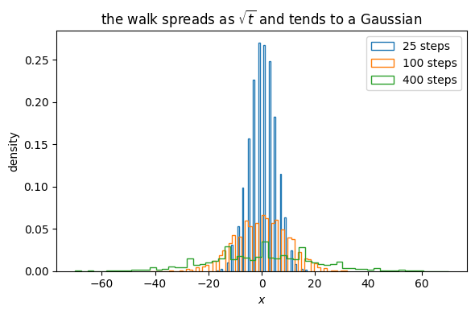
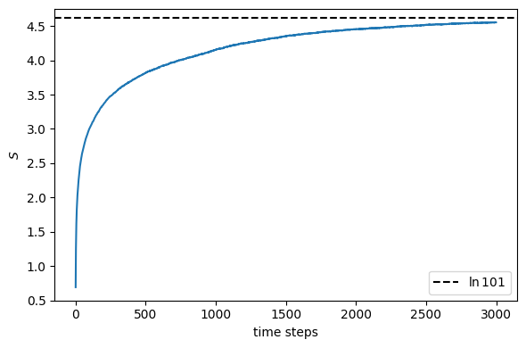
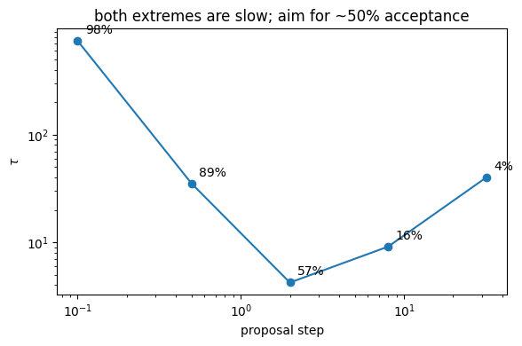

13. Elements from statistics#
Executable companion to chapter 12.
Every method so far expanded the wave function in a basis, and the error was a truncation. The stochastic methods that follow never write down a basis at all — what they have instead is a statistical error, and controlling it needs a different set of tools: probability distributions and their moments, the central limit theorem, the correlation time that says how many samples were really independent, random walks and the diffusion equation, and the Metropolis algorithm.
The chapter ends where it is going: a first variational Monte Carlo calculation on the two-electron quantum dot of chapter 11.
import sys
sys.path.insert(0, "../BookManybody/BookMaterial/Programs")
import math
import numpy as np
import matplotlib.pyplot as plt
import montecarlo as mc
rng = np.random.default_rng(2024)
13.1. 1. Random numbers#
A generator can be perfectly uniform and still be useless. RANDU passes every one-dimensional test; its consecutive triples satisfy \(x_{n+2} = 6x_{n+1} - 9x_n \pmod 1\) exactly and therefore lie on fifteen planes of the unit cube.
randu = mc.LinearCongruential(seed=1, a=65539, c=0, modulus=2**31)
x_randu = randu.sample(20000)
x_good = rng.random(20000)
print(f"{'generator':>10s} {'chi2 (10 bins)':>16s} {'lag-1 corr':>13s} "
f"{'on planes':>12s}")
print(f"{'RANDU':>10s} {mc.uniformity_test(x_randu):16.2f} "
f"{mc.serial_correlation(x_randu):13.5f} "
f"{mc.planes_test(mc.LinearCongruential(1)):11.1%}")
planes_good = np.mean(np.abs((x_good[2:] - 6*x_good[1:-1]
+ 9*x_good[:-2]) % 1.0) < 1e-12)
print(f"{'PCG64':>10s} {mc.uniformity_test(x_good):16.2f} "
f"{mc.serial_correlation(x_good):13.5f} {planes_good:11.1%}")
generator chi2 (10 bins) lag-1 corr on planes
RANDU 8.46 0.00510 100.0%
PCG64 11.39 -0.01081 0.0%
fig = plt.figure(figsize=(10, 4.5))
for k, (name, x) in enumerate((("RANDU", mc.LinearCongruential(1).sample(3000)),
("PCG64", rng.random(3000)))):
ax = fig.add_subplot(1, 2, k + 1, projection="3d")
ax.scatter(x[:-2], x[1:-1], x[2:], s=1)
ax.view_init(elev=22, azim=72)
ax.set_title(name)
ax.set_xlabel("$x_n$"); ax.set_ylabel("$x_{n+1}$")
plt.tight_layout()
plt.show()

13.2. 2. Monte Carlo integration and the square-root law#
The error falls as \(1/\sqrt{N}\) regardless of dimension. A grid needs \(N^d\) points for the same accuracy in \(d\) dimensions; Monte Carlo needs \(N\). That is the whole reason for using it on a many-body problem.
exact = math.pi
f = lambda x: 4.0/(1.0 + x*x)
print(f"{'N':>9s} {'estimate':>13s} {'error':>11s} {'|est-pi|':>11s} "
f"{'error*sqrt(N)':>15s}")
sizes, errors = [], []
for n in (10**3, 10**4, 10**5, 10**6):
value, error = mc.brute_force(f, n, rng)
sizes.append(n); errors.append(error)
print(f"{n:9d} {value:13.6f} {error:11.6f} {abs(value-exact):11.6f} "
f"{error*math.sqrt(n):15.4f}")
plt.figure(figsize=(6, 4))
plt.loglog(sizes, errors, "o-", label="measured")
plt.loglog(sizes, [errors[0]*math.sqrt(sizes[0]/n) for n in sizes], "--",
label=r"$1/\sqrt{N}$")
plt.xlabel("$N$"); plt.ylabel("error"); plt.legend(); plt.grid(alpha=0.3, which="both")
plt.tight_layout(); plt.show()
N estimate error |est-pi| error*sqrt(N)
1000 3.166063 0.019857 0.024470 0.6279
10000 3.143439 0.006374 0.001846 0.6374
100000 3.144923 0.002030 0.003331 0.6421
1000000 3.141857 0.000643 0.000264 0.6427

13.3. 3. Changing variables#
Random numbers arrive uniform on \([0,1)\); the inverse of the cumulative distribution turns them into anything integrable:
The Gaussian CDF cannot be inverted in closed form, so Box-Muller does two dimensions at once. When even that fails there is acceptance-rejection.
sample = mc.exponential_sampler(1.0)(200000, rng)
print(f"exponential, rate 1: mean {sample.mean():.4f} (exact 1), "
f"variance {sample.var():.4f} (exact 1)")
gauss = mc.box_muller(200000, rng)
print(f"Box-Muller normal: mean {gauss.mean():+.4f} (exact 0), "
f"variance {gauss.var():.4f} (exact 1)")
value, error = mc.acceptance_rejection(np.exp, 200000, rng, 0.0, 3.0)
print(f"acceptance-rejection, int_0^3 exp(x) dx = {value:.4f} +/- {error:.4f}"
f" (exact {math.exp(3)-1:.4f})")
fig, axes = plt.subplots(1, 2, figsize=(10, 3.6))
axes[0].hist(sample, bins=80, density=True, alpha=0.6)
grid = np.linspace(0, 8, 200)
axes[0].plot(grid, np.exp(-grid), "k-")
axes[0].set_title("exponential")
axes[1].hist(gauss, bins=80, density=True, alpha=0.6)
grid = np.linspace(-4, 4, 200)
axes[1].plot(grid, np.exp(-grid**2/2)/math.sqrt(2*math.pi), "k-")
axes[1].set_title("Box-Muller normal")
plt.tight_layout(); plt.show()
exponential, rate 1: mean 0.9970 (exact 1), variance 0.9925 (exact 1)
Box-Muller normal: mean +0.0021 (exact 0), variance 0.9984 (exact 1)
acceptance-rejection, int_0^3 exp(x) dx = 19.0354 +/- 0.0626 (exact 19.0855)

13.4. 4. Importance sampling#
Sampling from a density that resembles the integrand and averaging \(f/p\) flattens what is actually averaged. For
uniform sampling wastes almost every point on the exponential tails.
print(f"exact = {mc.six_dimensional_exact():.6f}\n")
print(f"{'N':>9s} {'brute force':>26s} {'importance sampling':>26s}")
for n in (10**4, 10**5, 10**6):
b, be = mc.six_dimensional_brute_force(n, rng)
i, ie = mc.six_dimensional_importance(n, rng)
print(f"{n:9d} {b:14.4f} +/- {be:7.4f} {i:14.4f} +/- {ie:7.4f}")
b, be = mc.six_dimensional_brute_force(10**6, rng)
i, ie = mc.six_dimensional_importance(10**6, rng)
print(f"\nimportance sampling is {be/ie:.0f} times more accurate,")
print(f"which by the square-root law is a factor {(be/ie)**2:.0f} in time.")
exact = 93.018830
N brute force importance sampling
10000 80.9802 +/- 31.3530 91.3613 +/- 0.7486
100000 82.6120 +/- 9.3715 93.1107 +/- 0.2395
1000000 87.3316 +/- 3.6435 92.9867 +/- 0.0757
importance sampling is 50 times more accurate,
which by the square-root law is a factor 2522 in time.
13.4.1. Why quantum mechanics forces this on us#
is importance sampling with the best possible \(p\). If \(\Psi\) is exact then the local energy \(E_L\) is a constant and the variance is zero — one sample suffices. The variance of \(E_L\) therefore measures directly how good the trial function is.
13.5. 5. The central limit theorem#
Averages of \(m\) samples from any distribution with finite variance are normally distributed with variance \(\sigma^2/m\). Here the parent is uniform, which is about as non-Gaussian as it gets.
print(f"{'m':>5s} {'mean':>12s} {'variance':>12s} {'sigma^2/m':>12s} "
f"{'ratio':>8s}")
for m in (1, 2, 5, 10, 50):
averages = rng.random((20000, m)).mean(axis=1)
predicted = (1.0/12.0)/m
print(f"{m:5d} {averages.mean():12.6f} {averages.var():12.6f} "
f"{predicted:12.6f} {averages.var()/predicted:8.4f}")
plt.figure(figsize=(6, 4))
for m in (1, 2, 5, 20):
averages = rng.random((40000, m)).mean(axis=1)
plt.hist(averages, bins=60, density=True, histtype="step", label=f"m={m}")
plt.xlabel("average of $m$ uniform samples"); plt.ylabel("density")
plt.legend(); plt.tight_layout(); plt.show()
m mean variance sigma^2/m ratio
1 0.501755 0.084806 0.083333 1.0177
2 0.499147 0.041994 0.041667 1.0079
5 0.498981 0.016539 0.016667 0.9924
10 0.500561 0.008449 0.008333 1.0139
50 0.500115 0.001676 0.001667 1.0055

13.7. 7. Random walks and the diffusion equation#
An unbiased walk has \(\langle x\rangle = 0\) and \(\langle x^2\rangle = n l^2\). Discretising the walk gives back the diffusion equation exactly, with \(D = l^2/2\epsilon\) — which is why diffusion Monte Carlo works: the Schrödinger equation in imaginary time is a diffusion equation.
positions = mc.random_walk(4000, 400, rng)
print(f"{'steps':>7s} {'<x>':>10s} {'<x^2>':>10s} {'n l^2':>10s} {'ratio':>8s}")
for n in (25, 50, 100, 200, 400):
row = positions[n-1]
print(f"{n:7d} {row.mean():+10.4f} {(row**2).mean():10.3f} "
f"{float(n):10.3f} {(row**2).mean()/n:8.4f}")
plt.figure(figsize=(6, 4))
for n in (25, 100, 400):
plt.hist(positions[n-1], bins=60, density=True, histtype="step",
label=f"{n} steps")
plt.xlabel("$x$"); plt.ylabel("density"); plt.legend()
plt.title("the walk spreads as $\\sqrt{t}$ and tends to a Gaussian")
plt.tight_layout(); plt.show()
steps <x> <x^2> n l^2 ratio
25 +0.1775 25.282 25.000 1.0113
50 +0.0695 49.213 50.000 0.9843
100 +0.0110 99.126 100.000 0.9913
200 -0.1885 200.719 200.000 1.0036
400 -0.2950 398.730 400.000 0.9968

13.7.1. Equilibrium and entropy#
On a finite ring the spreading has to stop. The entropy \(S = -\sum_i w_i \ln w_i\) rises and then flattens: the walkers have reached a steady state. Nothing imposed it — it happened because the walk can reach every site from every other, which is ergodicity.
entropy = mc.walk_entropy(mc.random_walk(4000, 3000, rng, limit=50))
for n in (1, 10, 100, 500, 1000, 2000, 3000):
print(f"after {n:5d} steps: S = {entropy[n-1]:.4f}")
print(f"uniform distribution: S = {math.log(101):.4f}")
plt.figure(figsize=(6, 4))
plt.plot(entropy)
plt.axhline(math.log(101), ls="--", color="k", label=r"$\ln 101$")
plt.xlabel("time steps"); plt.ylabel("$S$"); plt.legend()
plt.tight_layout(); plt.show()
after 1 steps: S = 0.6927
after 10 steps: S = 1.8752
after 100 steps: S = 3.0046
after 500 steps: S = 3.8190
after 1000 steps: S = 4.1504
after 2000 steps: S = 4.4534
after 3000 steps: S = 4.5531
uniform distribution: S = 4.6151

13.8. 8. Markov chains and detailed balance#
Iterating a transition matrix drives any starting vector to the eigenvector with eigenvalue one. Detailed balance,
is the stronger condition that guarantees the right stationary distribution — and note that only the ratio \(w_i/w_j\) appears, so the normalisation never has to be computed.
final, eigenvector, iterations = mc.steady_state(mc.EXAMPLE_W)
print(f"iterated to convergence in {iterations} steps:")
print(" " + " ".join(f"{v:.6f}" for v in final))
print("eigenvector of W with eigenvalue 1:")
print(" " + " ".join(f"{v:.6f}" for v in eigenvector))
print(f"agree: {np.allclose(final, eigenvector, atol=1e-8)}")
W = mc.transition_matrix(11)
final, _, _ = mc.steady_state(W)
print(f"\neleven-site walk, steady state uniform: "
f"{np.allclose(final, np.ones(11)/11, atol=1e-8)}")
print(f"detailed balance residual: {mc.detailed_balance_residual(W, final):.1e}")
iterated to convergence in 22 steps:
0.244318 0.319602 0.056818 0.379261
eigenvector of W with eigenvalue 1:
0.244318 0.319602 0.056818 0.379261
agree: True
eleven-site walk, steady state uniform: True
detailed balance residual: 9.2e-13
13.9. 9. The Metropolis algorithm#
A move to a more probable state is always accepted; a move to a less probable one is accepted with probability \(w_j/w_i\). Rejected moves count — the old configuration is measured again.
The proposal width is the one free parameter and it matters more than it looks.
def log_target(x):
v = float(x[0])
return -0.5*v**2 - 0.1*v**4
steps, taus, accepts = [], [], []
print(f"{'step':>6s} {'acceptance':>12s} {'tau':>9s} {'<x^2>':>20s}")
for step in (0.1, 0.5, 2.0, 8.0, 32.0):
chain, acceptance = mc.metropolis(log_target, np.zeros(1), 100000, rng,
step=step)
values = chain[:, 0]
tau = mc.correlation_time(values)
steps.append(step); taus.append(tau); accepts.append(acceptance)
print(f"{step:6.1f} {acceptance:11.1%} {tau:9.2f} "
f"{(values**2).mean():11.4f} +/- {mc.corrected_error(values**2):.4f}")
fig, ax = plt.subplots(figsize=(6, 4))
ax.loglog(steps, taus, "o-")
ax.set_xlabel("proposal step"); ax.set_ylabel(r"$\tau$")
for s, t, a in zip(steps, taus, accepts):
ax.annotate(f"{a:.0%}", (s, t), textcoords="offset points", xytext=(6, 6))
ax.set_title("both extremes are slow; aim for ~50% acceptance")
plt.tight_layout(); plt.show()
step acceptance tau <x^2>
0.1 97.6% 743.93 0.6317 +/- 0.0428
0.5 88.6% 35.10 0.6149 +/- 0.0101
2.0 57.2% 4.22 0.6197 +/- 0.0045
8.0 16.0% 9.11 0.6057 +/- 0.0084
32.0 4.0% 40.07 0.5988 +/- 0.0158

13.10. 10. A first variational Monte Carlo on the quantum dot#
with \(a=1\) fixed by the Coulomb cusp condition. The check first: switch the Jastrow factor off and set \(\alpha=1\), and the trial function is the minimal-basis Hartree-Fock determinant of chapter 11, so the energy must be \(2\hbar\omega + \sqrt{\pi/2}\sqrt{\hbar\omega} = 3.253314\).
reference = mc.hartree_fock_minimal_basis()
r = mc.vmc(alpha=1.0, jastrow=False, n_samples=200000, rng=rng, step=1.0)
print(f"VMC : {r['energy']:.6f} +/- {r['error']:.6f}")
print(f"exact : {reference:.6f} (table 11.1, first row)")
print(f"deviation : {abs(r['energy']-reference)/r['error']:.2f} standard errors")
print(f"variance of E_L {r['variance']:.4f}, acceptance {r['acceptance']:.2f}, "
f"tau {r['tau']:.1f}")
VMC : 3.259763 +/- 0.011809
exact : 3.253314 (table 11.1, first row)
deviation : 0.55 standard errors
variance of E_L 7.0800, acceptance 0.43, tau 3.9
Without the Jastrow factor the average can be done analytically too,
so every Monte Carlo number can be checked against a formula.
optimum, optimum_energy = mc.gaussian_optimum()
print(f"best pure Gaussian: alpha = {optimum:.4f}, E = {optimum_energy:.6f}\n")
print(f"{'alpha':>8s} {'VMC':>12s} {'error':>10s} {'exact':>12s} "
f"{'deviation':>10s} {'variance':>10s}")
for alpha in (0.70, optimum, 0.85, 1.00):
r = mc.vmc(alpha=alpha, jastrow=False, n_samples=120000, rng=rng, step=1.0)
e = mc.gaussian_energy_exact(alpha)
print(f"{alpha:8.4f} {r['energy']:12.6f} {r['error']:10.6f} {e:12.6f} "
f"{abs(r['energy']-e)/r['error']:9.2f}s {r['variance']:10.4f}")
best pure Gaussian: alpha = 0.7631, E = 3.168384
alpha VMC error exact deviation variance
0.7000 3.180724 0.008834 3.177169 0.40s 2.9549
0.7631 3.159447 0.008660 3.168384 1.03s 3.2179
0.8500 3.173858 0.010603 3.181969 0.76s 3.4146
1.0000 3.279652 0.025302 3.253314 1.04s 58.0182
The variance stays around 3, dominated by the rare configurations where the electrons approach and \(1/r_{12}\) diverges. That divergence is exactly what the Jastrow factor removes.
print(f"{'alpha':>7s} {'beta':>7s} {'energy':>12s} {'error':>10s} "
f"{'variance':>11s}")
for alpha, beta in ((0.98, 0.30), (0.98, 0.40), (0.98, 0.48),
(0.96, 0.44), (1.00, 0.44)):
r = mc.vmc(alpha=alpha, beta=beta, jastrow=True, n_samples=60000,
rng=np.random.default_rng(2024), step=1.0)
print(f"{alpha:7.2f} {beta:7.2f} {r['energy']:12.6f} {r['error']:10.6f} "
f"{r['variance']:11.5f}")
print()
print("exact (Taut) : 3.000000")
print("CCSD, 42 orbitals : 3.013626 (table 11.4)")
print("Hartree-Fock, 42 orb. : 3.161921 (table 11.3)")
alpha beta energy error variance
0.98 0.30 3.006917 0.001390 0.01775
0.98 0.40 3.000298 0.000365 0.00195
0.98 0.48 3.001957 0.000779 0.00439
0.96 0.44 3.000618 0.000562 0.00220
1.00 0.44 3.001696 0.000775 0.00362
exact (Taut) : 3.000000
CCSD, 42 orbitals : 3.013626 (table 11.4)
Hartree-Fock, 42 orb. : 3.161921 (table 11.3)
13.11. What changed#
Two things are worth drawing out.
The variance fell by three orders of magnitude, from about 3 to about 0.002. Both the energy error and the variance are second order in \(\delta = \Psi_T - \Psi_0\), but we know what the variance should be: zero. It is an absolute measure of quality, which is why variance minimisation is a standard and often more stable optimisation strategy.
The energy is below the CCSD result of chapter 11. Not because the many-body treatment is better — CCSD is exact for two electrons in its basis — but because there is no basis here at all. The Jastrow factor depends on \(r_{12}\) directly and reproduces the Coulomb cusp exactly, which no finite sum of oscillator products can do.
The basis-set error that dominated chapter 11 has been eliminated and replaced by a statistical error, which we know how to estimate and can reduce by running longer. That trade is the subject of the chapters that follow.